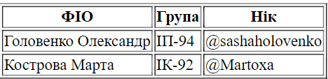
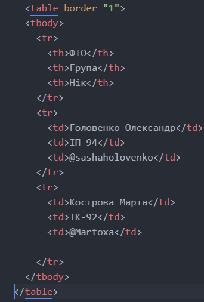
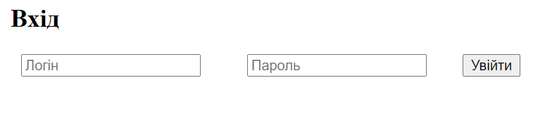
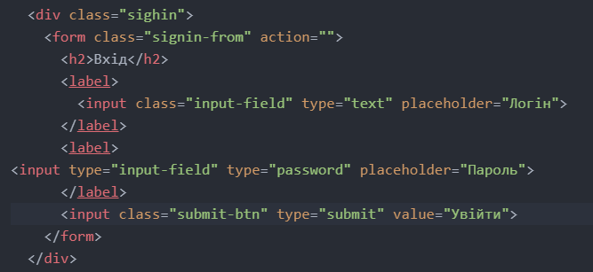
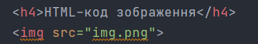
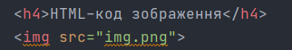

ЛАБОРАТОРНА РОБОТА №1
Тема: СТРУКТУРА HTML-ДОКУМЕНТА. ВИБІР ПРЕДМЕТНОГО ГАЛУЗІ. РОБОТА З ПОСИЛАННЯМИ, ТАБЛИЦЯМИ, ЗОБРАЖЕННЯМИ, ФОРМАМИ в HTML-ДОКУМЕНТІ.
Опис предметного середовища
Сайт "Beauty Bar" - програмна реалізація роботи реєстратури салону краси. Продукт забезпечує моніторинг вільних годин та онлайн-запис клієнта на візит до майстра. Майстру доступний власний кабінет, у якому є розклад його робочого дня. Сайт інформує клієнта про усі доступні процедури, їх вартість та майстрів салону.
Середовища, в яких ми працювали: VS code, Webstorm
Загальна постановка задачі програми
Предметна область:> робота реэстратури салону краси
Об’єкти взаємодії: форма авторизації та реєстрації, інтерактивний
лістинг процедур, вікно онлайн-запису, меню сайту.
Сайт має відповідати наступним функціональним вимогам:
1. Інформування клієнта про послуги, їх вартість, майстрів салону
2. Онлайн-запис клієнта на процедру у вільні години
3. Власний кабінет майстра з розкладом роботи
4. Реєстрація клієнтів та майстрів
Сайт має відповідати наступним нефункціональним вимогам:
1. Продукт повинен бути інтуїтивно зрозумілим користувачу
2. Мати презентабельний вигляд
3. Бути легким у використанні
Лабораторна робота 1
Тема:
СТРУКТУРА HTML-ДОКУМЕНТА. ВИБІР ПРЕДМЕТНОГО ГАЛУЗІ. РОБОТА З ПОСИЛАННЯМИ, ТАБЛИЦЯМИ, ЗОБРАЖЕННЯМИ, ФОРМАМИ в HTML-ДОКУМЕНТІ.
Мета:
Придбати практичні навички роботи з HTML-документом, таблицями,формами, зображеннями, посиланнями.Створити шаблон звітного HTML-документом для відображення результатів роботи всіх лабораторних робіт.
Розташування WEB проекту:
GitHubHTML-код таблиці
 HTML-код форми
 HTML-код зображення
 
